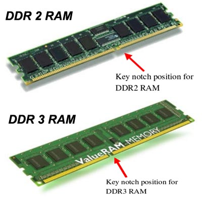

2.11.7. DDR2 и DDR3
DDR2 SDRAM (англ. double-data-rate two synchronous dynamic random access memory — синхронная динамическая память с произвольным доступом и удвоенной скоростью передачи данных, второе поколение) — это тип оперативной памяти используемой в вычислительной технике в качестве оперативной и видеопамяти. Пришла на смену памяти DDR SDRAM.
Память DDR2 является прямым наследником DDR и близким родственником памяти первого поколения – SDRAM. Для DDR2 характерно увеличение частоты функционирования, усовершенствованная логика контроллера и сниженное энергопотребление. Новой памяти свойственна новая архитектура, которая имеет ряд фундаментальных отличий. Во-первых, в модулях памяти DDR2 используется 4-битная упреждающая выборка (4-bit Prefetch). Данная технология позволила по сравнению с частотой синхронизации увеличить скорость ввода/вывода данных в четыре раза, хотя частота тактовых импульсов по сравнению с наиболее продвинутыми реализациями SDRAM и DDR изменилась не существенно. Высокая скорость ввода/вывода у DDR2 достигается, как и у DDR, передачей двух блоков данных в пределах одного такта, что в совокупности с удвоенной частотой буферов ввода/вывода дает учетверенный показатель эффективной частоты. Другое серьезное нововведение DDR2 касается усовершенствования логики контроллера. В принципе, его можно рассматривать как следствие высоких задержек CAS Latency Time, RAS-to-CAS Delay и RAS Recharge Time, характерных для второго поколения DDR. Данную проблему, а также некоторые недостатки, свойственные протоколам работы SDR/DDR-памяти, должна решить технология "отложенного CAS" (Posted CAS) и механизм аддитивной латентности (Additive Latency).
Рис. 26.6. Модуль памяти DDR2 (2Гб).
Основное отличие DDR2 от DDR — вдвое большая частота работы шины, по которой данные передаются в буфер микросхемы памяти. При этом, чтобы обеспечить необходимый поток данных, передача на шину осуществляется из четырёх мест одновременно.
| Тип чипа | Частота памяти | Частота шины | Эффективная частота |
| DDR2-400 | 100 МГц | 200 МГц | 400 МГц |
| DDR2-533 | 133 МГц | 266 МГц | 533 МГц |
| DDR2-667 | 166 МГц | 333 МГц | 667 МГц |
| DDR2-800 | 200 МГц | 400 МГц | 800 МГц |
| DDR2-1066 | 266 МГц | 533 МГц | 1066 МГц |
DDR3 SDRAM (англ. double-data-rate three synchronous dynamic random access memory – синхронная динамическая память с произвольным доступом и удвоенной скоростью передачи данных, третье поколение) — это тип оперативной памяти, используемой в вычислительной технике в качестве оперативной и видео- памяти. Пришла на смену памяти типа DDR2 SDRAM.
Рис. 26.7. Модуль памяти Kingston DDR3 DDRAM (4GB,1333MHz).
Среди основных преимуществ нового стандарта, прежде всего, стоит отметить меньшее энергопотребление, примерно на 40% чем у ходовых образцов модулей DDR2. Основной причиной экономии энергопотребления называют использование нового поколения чипов памяти DDR3, выпуск которых налажен у большинства производителей. Это позволяет снизить рабочие напряжения чипов – до 1,5 В у DDR3, что ниже 1,8 В у DDR2 или 2,5 В у DDR.
Производительность модулей памяти DDR3 в перспективе должна значительно превысить возможности нынешнего поколения памяти DDR2 – хотя бы потому, что теоретически эффективные частоты DDR3 будут располагаться в диапазоне 800 МГц – 1600 МГц (при тактовых частотах 400 МГц – 800 МГц). В то время как у DDR2 эффективные рабочие частоты составляют 400 МГц – 1066 МГц (тактовые частоты 200 МГц - 533 МГц), а у DDR – и вовсе 200 МГц – 600 МГц (100 МГц - 300 МГц).
Память DDR3 обладает 8-битным буфером предварительной выборки, в то время как у нынешней памяти DDR2 он 4-битный, а у DDR и вовсе был 2-битный. Буфер предварительной выборки (prefetch buffer), надо отметить, достаточно важный элемент современных модулей памяти, поскольку он отвечает за кэширование данных перед тем, как они будут востребованы. Еще одним преимуществом DDR3 можно смело назвать новую схемотехнику динамической внутрикристальной терминации (Dynamic On-Die Termination), калибровка которой производится в процессе инициализации для достижения оптимального взаимодействия памяти и системы. Наконец, в отличие от DDR2, где терминация применялась только частично, память DDR3 обладает полной терминацией, включая адреса и команды.
Модули памяти DDR3 DIMM для настольных ПК будут обладать 240-контактной структурой, привычной нам по модулям DDR2; однако физической совместимости не будет благодаря различному расположению ключей DIMM. Такая защита, предотвращающая установку модулей DDR3 в платы под DDR2 и наоборот предусмотрена не только по причине поконтактной несовместимости модулей, но и в связи с разными напряжения питания и сигнальными уровнями разных поколений оперативной памяти. Минусом DDR3 против DDR2 можно назвать более высокую латентность.

Рис. 26.8. Констуктивные отличия DDR2 и DDR3.